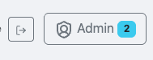
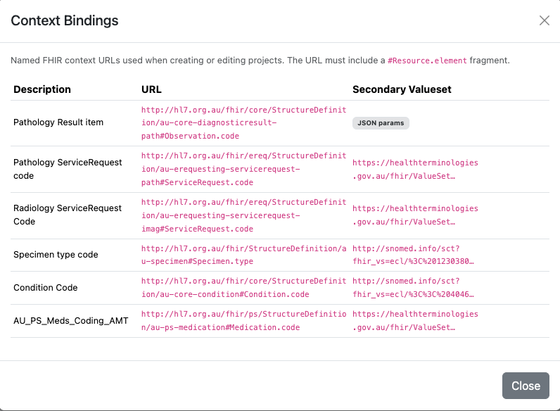
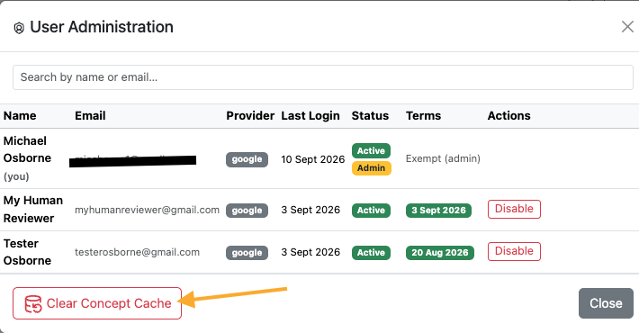

Administration
Administrative functions are available to users with the Admin role. Open the User Administration dialog from the toolbar to manage users and perform maintenance tasks.
Site-wide admin access (this page) is separate from the per-project Owner / Author / Reviewer / Reader roles described in Project roles — an admin can manage any user account, but still needs a project role to work on a specific mapping project.
Managing user accounts
The User Administration dialog lists every user who has logged into AI-Map, with their name, email, login provider, last login time, and account Status. Search by name or email to find a specific user.
Every account is in one of three states:
| Status | Meaning |
|---|---|
| Active | The account has been approved and can sign in. |
| Pending | The person has signed in for the first time and is waiting for an administrator to approve them. Pending accounts are listed first. |
| Disabled | An administrator has disabled or rejected the account. It cannot sign in. |
For each user you can:
- Approve / Reject a pending account — Approve activates it; Reject leaves it inactive and records the decision, so the account moves to Disabled rather than staying in the queue.
- Disable / Enable an account that has already been decided on — a disabled user cannot log in.
You cannot disable your own account, to prevent accidentally locking yourself out.
Admin access is not granted from the application
There is no Make Admin control. Site-wide admin rights come from the admin_emails
deployment setting, which is authoritative in both directions: an address on that list is
made an admin (and activated) at login, and an account removed from the list has its admin
rights revoked at its next login. The Admin badge in the user list shows who currently
holds them. To change who is an administrator, ask whoever maintains the deployment
configuration.
The pending approval queue
Nothing in a pending registration tells the person waiting when they will be approved, so the queue has to come to you. When one or more accounts are waiting, the Admin button in the toolbar carries a blue count badge — "Accounts waiting for approval" — showing how many. The badge disappears once the queue is empty, and updates as soon as you approve or reject an account without needing to reload the page.

The Admin button in the toolbar with a pending count of 2 — two accounts are waiting for a decision. The badge is hidden entirely when the queue is empty.
Inside the dialog, pending accounts are sorted to the top of the list so they are the first thing you see.
Approval notification emails
Where the deployment is configured for it, AI-Map also emails the administrators as soon as a registration arrives, with the subject "AI Map: access request from <name>". The message gives the person's name, email, and login provider, and links back to AI-Map with a reminder to use the Admin button to approve or reject.
Notifications are best-effort and never block a sign-in: if mail is misconfigured or the mail service is down, the registration still lands in the queue and the badge still appears — you simply will not be told about it by email.
Email is enabled only when the deployment sets both a connection string and a sender address;
leaving the connection string unset is how it is turned off. The relevant settings, in
config.json or as environment variables, are:
config.json key |
Environment variable | Purpose |
|---|---|---|
email_connection_string |
AIMAP_EMAIL_CONNECTION_STRING |
Azure Communication Services connection string. |
email_sender |
AIMAP_EMAIL_SENDER |
Verified sender address on the linked domain. |
app_base_url |
AIMAP_BASE_URL |
Public base URL, used to link back to AI-Map from the email. |
Recipients are the addresses in the admin_emails setting — the same list that grants admin
rights.
Managing context bindings
Context bindings are the shared list of FHIR contexts offered when a project is created (see Creating a project). Because a binding is deployment-wide configuration — and the URL it carries is fetched server-side during validation — only an administrator can add, edit, or delete one. Everyone else can open ⚙ Manage context bindings… and read the list, but sees no editing controls.
Before adding an unfamiliar binding, try it in the Test API dialog first; see Trying out a context binding.

The Context Bindings dialog for a non-admin: the Description, URL, and Secondary Valueset of each binding are all readable, but the rows carry no edit or delete buttons and there is no Add binding form beneath the table — only Close. An administrator sees the same list with those controls in place.
Clearing the concept cache
AI-Map caches terminology lookups (concept displays, properties, and value set membership) to speed up automap and the mapping table. If the underlying terminology server is updated — for example when a code system version changes or a concept is retired — the cache can hold stale results.
Click Clear Concept Cache in the User Administration dialog to purge all cached terminology lookups. Subsequent lookups are re-fetched fresh from the terminology server.

The Clear Concept Cache button in the User Administration dialog purges stale terminology lookups. Use it after a terminology server update, or if displays or value set membership appear out of date.
Clearing the cache is safe: it does not affect any mappings, project data, or user accounts. The first few lookups after clearing may be slightly slower while the cache is repopulated.